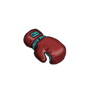
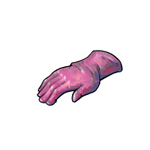
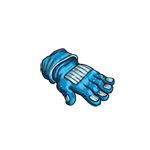
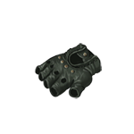
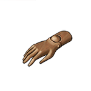

Получено: файл; исходный URL. Иллюстрация «Ручная коллекция» из каталога ViveR_9, сопоставлена по точному названию; возможны отличия версий. Оригинальный файл без перекодирования; авторство отдельно не установлено. Страница: источник.

Ручная коллекция
ВКонтакте; дата источника не указана- Тип
- Коллекции
- Версия и дата
- ВКонтакте; дата источника не указана
Элементы коллекции
















Данные по источнику · ВКонтакте · дата источника не указана
Предварительно: один источник; требует сверки. Требуется сверка.
- Награда
- 100 опыта и мухоморы
- Где копать
- Сундуки, грядки, бассейн, пирс, столб-символ, рука терминатора, часовня
- Состав (источник Zombie-island)
- Боксёрская перчатка; Резиновая перчатка; Спецовка; Рокерская перчатка; Рука манекена.
- Награда (источник Zombie-island)
- 1 Мухоморы; 100 Опыт.
- Где копать Ручную коллекцию в Зомби Ферме лопатами
- Золотой миллиард; Кладоискатель; Кладоискатель с мозгами; Рыбак; Рыбак с мозгами; Марафонец; Флаг Марафонца; Японский сад; Джокер; Мост; Катапульта; Китайская башня; Китайская стена; Часовня; Фонарь раз; Ограда раз; Ограда два; Настил бамбуковый; Лампа садовая; Садовая ограда; Замшелый камень; Замшелый камешек; Хвойник маленький; Хвойник средний; Хвойник большой; Кустарник малый; Кустарник большой; Сакура в цвету; Сувенирная сакура; Столб Золотой; Столб-Символ; Беседка; Забор; Чучело Санты; Груда камней; Камень средний; Камень большой; Валун поменьше; Валун; Маленький зимний валун; Средний зимний валун; Большой зимний валун; Кварц 1; Кварц 2; Кварц 3; Дуб маленький; Дуб средний; Дуб большой; Дуб огромный; Ель маленькая; Ель средняя; Ель большая; Маленькая зимняя елка; Средняя зимняя елка; Большая зимняя елка; Весенняя ваза 3; Весенняя ваза 2; Весенняя ваза 1.
- Ручная коллекция выпадает из мешков Кладоискателей
- Кладоискатель; Кладоискатель с мозгами.
- Ручная коллекция Зомби Фермы выпадает из ценностей
- Термо-яйцо; Клубничное; Сюрприз; Пернатый подарок; Простое; Коллекционер; Коллекционная посылка; Коллекционный.
- Ручная коллекция выпадает из Секретного клада и Сундука Чудовища
- Секретный клад; Сундук Чудовища.
- Ручная коллекция выпадает при вскапывании земли
- Кусок земли.
- Ручная коллекция попадается при колдовании Палочками дома
- Палочка-выручалочка.
Данные по источнику · ВКонтакте, ZombieS Forever · дата редакции не установлена
Предварительно: Историческая фанатская страница; независимость от других источников не установлена. Возможны различия версий и дат.. Требуется сверка.
- Награда по ZombieS Forever
- 100 опыта и мухоморы
- Места получения: выборка из источника
- Сундуки, грядки, бассейн, рука терминатора, часовня и др.; фонтан в источнике отмечен вопросом.
Данные по источнику · браузерная версия; платформа в ответе не уточнена · Дата на странице (формат не уточнён): 21/04/2015
Предварительно: Ответ справочного сайта; достоверность и независимость от других фанатских источников не установлены. Возможны различия редакций и версии.. Требуется сверка.
- Ответ источника
- Ручная коллекция Зомби фермы состоит из 5 элементов: руки манекена, спецовки, боксерской, рокерской и резиновой перчаток. По желанию коллекцию можно обменять, и получить взамен один мухомор и более 100 единиц опыта. Ручную коллекцию копают лопатами под разными декорациями. Например, под заборами, чучелами Санта Клауса, беседкой, настилом бамбуковым, Джокером, Часовней, елью, дубом, кварцом, зимним валуном, грудой камней и так далее. Некоторые элементы могут принести Кладоискатели в своих мешках. А вот если разбить Клубничное яйцо, наверняка, выпадет какая-то перчатка. Кроме этого, собрать всю коллекцию помогут ценные клады: сюрприз, пернатый подарок, сундук чудовища, секретный клад.
Данные по источнику · браузерная версия; платформа не указана · дата редакции не установлена
Предварительно: Содержимое списка: изображения и колонки могут терять смысл при извлечении текста; отдельная страница и дата не проверены. Подписи alt иногда ошибочны.. Требуется сверка.
- Текст карточки из каталога
- 100 опыта и Мухоморы Боксёрская перчатка Резиновая перчатка Спецовка Рокерская перчатка Рука манекена Где копать: сундуки, грядки, Бассейн, Бригада Элвиса, Пирс, Забор (полукругом), Столб-Символ, Рука терминатора,
Данные по источнику · Мой Мир (Mail.ru); историческая таблица · дата редакции не установлена
Предварительно: Источник сам использует знаки вопроса; не следует считать такие места подтверждёнными. Возможны изменения патча и платформы; независимость от других справочников не доказана.. Требуется сверка.
- Название в источнике
- Ручная коллекция
- Где копать
- сундуки, грядки, Бассейн, Бригада Элвиса, Пирс, Забор (полукругом), Столб-Символ, Рука терминатора,
- Награда
- 100 опыта и Мухоморы
Данные по источнику · браузерная версия; на сайте указана игра ВКонтакте · дата редакции не установлена
Предварительно: Исторический текст; сильно совпадает со справкой Zommbie.at.ua, независимость не доказана. Отрицания и доступность могут измениться с патчем.. Требуется сверка.
- Где искать по странице «Зомбастики»
- Деревья, камни, кладоискатель, рука терминатора.
Данные по источнику · историческая браузерная версия, платформа не указана · 10.01.2014 — дата в каталоге; дата редакции материала неизвестна
Предварительно: Фанатский список без вероятностей и уточнения площадки; независимость от других источников не установлена.. Требуется сверка.
- Где искать по списку сайта
- Деревья, камни, кладоискатель, рука терминатора
- Оговорка
- Список может относиться к разным условиям, инструментам и периодам игры; не доказывает гарантированное выпадение. Заявления «только» и «невозможно» относятся лишь к времени и версии источника.
Связанные сущности
нет проверенных связей — требуется сверка.
Источники
- прочитано; проверка 2026-11-21
- прочитано: Zombie-island.moy.su; проверка 2026-11-21
- FatalGame: прочитан отдельный ответ; дата на странице 21/04/2015
- ZOMBIA: прочитана карточка в списке
- Ссылка на отдельную страницу; отдельно не проверена
- Zombiemail: строка таблицы коллекций; Мой Мир
- Зомбастики: прочитана соответствующая строка; возможная копия другого справочника
- ViveR_9: изображение в каталоге коллекций; совпадение названия
- zommbie.at.ua: где искать коллекции